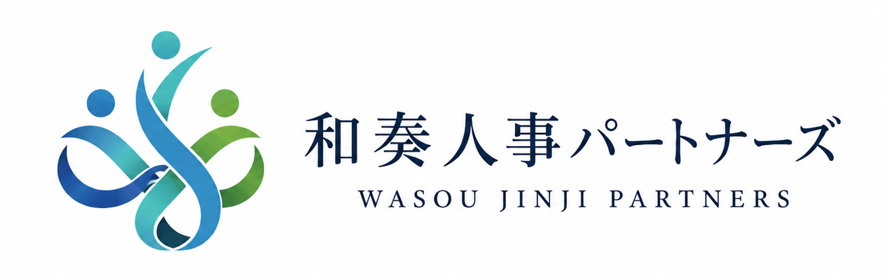

無料相談 ｜ 60分 ｜ オンライン対応
人が辞める、採用できない、育たない。
その原因を、まず一緒に整理しませんか。
創業家の2代目・3代目社長が抱える
採用・定着・育成・組織づくりの悩みを、
60分の無料相談で整理します。
こんなお悩みはありませんか
創業家の2代目・3代目社長が
抱えがちな「人の問題」
- 求人を出しても応募が来ない。
- 採用しても定着しない。
- 社員が育たず、社長がいつも抱え込んでいる。
- 評価制度や給与制度を見直したい。
- 先代・親族・古参社員との関係が、社内に影響している。
このような問題は、表面的には「採用の問題」「社員の問題」に見えても、
実際には、経営方針・価値観・評価制度・社内の空気が複雑に絡んでいることがあります。
無料相談でできること
60分で「人の問題」の
根っこを一緒に整理します
無料相談では、御社の状況をお聞きしながら、
今の「人の問題」がどこから起きているのかを整理します。
問題の根っこはどこにあるのか、一緒に探ります
- 採用の問題なのか。
- 定着の問題なのか。
- 育成の問題なのか。
- 評価制度の問題なのか。
- 経営陣の方向性の問題なのか。
そして、まず何から着手すべきかを一緒に考えます。
安心してご相談ください
相談内容はまとまっていなくても
大丈夫です。
うまく説明できなくても構いません。
断片的なお話でも、そこから整理していきます。
🔒
秘密厳守
ご相談内容は一切外部に漏れません。安心してお話しください。
🆓
完全無料
相談は完全無料です。費用は一切かかりません。
🤝
無理な営業なし
無理な営業はいたしません。まず話すだけでも構いません。
相談内容がまとまっていなくても大丈夫です。
断片的なお話でも、そこから整理していきます。
まずは60分、今の状況を一緒に整理しましょう。
✉
無料相談予約はこちら
- 完全無料・秘密厳守
- オンライン相談対応
- 相談内容がまとまっていなくても問題ありません

株式会社和装コンサルタンツ